Welcome
My name is Michael Tobias Flohrschütz - call me Mito.
I am a mobile & web developer with 4+ years of professional experience building a cross-platform React Native app (iOS, Android, Web) and its Firebase backend.
Known for thoroughness: I trace bugs to their root cause, think through edge cases and ship features that are genuinely finished rather than “done for now”.
My background in audio engineering and movement coaching brings analytical problem solving, systems thinking and a strong user perspective to product development.
Currently I work for Teamfit, a corporate health and team challenge platform with 15,000+ daily active users, built with React Native and Firebase.
For many years now and through various careers, my mission is to support people to live healthy, mobile, empowered and embodied lives.
Beyond the individual, I also care a lot about community/connection and ecological sustainability.
(Scroll down to read more)
About me
Born and raised in Munich, Germany, I always had an urge to travel and explore as well as broad
interests.
So I went to study audio engineering in Graz, Austria and later lived a nomadic lifestyle for a couple of
years training and teaching AcroYoga.
But at some point I realized lasting happiness and freedom can only be found inside. A good life is not
something that can be achieved. It is not so much what I do or where, but HOW. It is presence in each
moment.
Now I live near Munich, have a beautiful daughter and mainly venture out into the depths the internet and
explore code. The focus has shifted to creation and stability.
My friends describe me as open-minded, curious, creative, devoted and pleasant-natured.
Among my key talents are my ability to analyze and systematize, as well as to make complex things comprehensible.
I prefer to be prepared and wisely choose my path of action, rather than just dashing forward.
I work well autonomously, but I do not thrive on competition.
The greatest things are achieved collaboratively. At the core of working effectively as a team I
see respect, support, sincere communication and a clear common goal/mission.
Why I am a web developer
Developing code allows me to dive into a state of flow and enthusiasm. It sparks my curiosity and satisfies my joy in solving problems and crafting useful, innovative things.
Habitually I analyze how things could be optimized in functionality and usability, from software to movement patterns to a kitchen tool.
I have always been drawn to domains that integrate both brain hemispheres: Technology and creativity, understanding and experience, intellect and embodiment, logic and emotion. Writing efficient, clean code largely benefits from a systematic approach, but also from a portion of creativity. There are always many ways to implement a given functionality. But an elegant, nifty solution can be considered “art”.
Past careers
As a sound engineer, in more than 60 live concerts and several studio recordings I prove capable of managing highly complex systems, effectively trace errors, all while coordinating multiple people, staying sharp to details and keeping a cool head when things got stressful.
In my career as an acoustics engineer I designed and managed over 30 room- and architectural acoustics projects, from offices to high-end studios, communicating requirements and details with clients and partners to meet deadlines, budgets and leading-edge deliverables.
As a self-employed AcroYoga teacher, frequently collaborating with varying co-teachers and (co-)event-organizers, I have a track record of over 3000 students, from privates to big stages, and an increased number of invitations to teach at events and studios around the world. My unique style is renowned for comprehensible systematization, innovative approaches, subtle progressions and precise instructions. See www.FlyingMonkey.eu
Movement teacher turned web developer?
For one, as a movement teacher I was never interested in big muscles, but I wanted my students/clients to feel good and capable in their body. This is still part of my mission.
On the other hand, on many levels we modern humans are more connected today than ever before. And yet, the same time there is more loneliness and disconnection than ever before. Technology is part of this problem. But I believe it can also be part of the solution.
For me web technology is the contemporary and most efficient way to connect people on a large scale and assist them in every-day life to evolve physically and mentally so they can live healthy and empowered lives.
Skills
I build mobile apps and websites end to end: from concept, UI and interaction to cloud functions, APIs and databases.
Frontend & mobile
- • Cross-platform apps with React Native, Expo and React Native Web
- • Native module integration (iOS/Android): HealthKit, Health Connect, background GPS
- • Navigation, animations and state (React Navigation, Reanimated, Zustand, MMKV)
- • Responsive, accessible interfaces and web components
- • Internationalization (i18n with Crowdin)
- • UX: personas, user stories, user flows
Backend & cloud
- • Node.js, Express and REST APIs
- • Firebase Cloud Functions, Auth and Storage
- • Serverless functions (AWS Lambda) and Supabase
- • Relational and non-relational databases
- • LLM integration (Claude, Gemini APIs) and semantic search
- • CI/CD, monitoring and analytics (Bugsnag, Amplitude)
Toolbelt
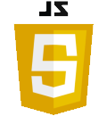

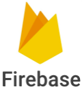
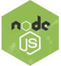
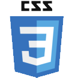


Programming
Frontend & mobile
Backend & cloud
Databases
Tooling & DevOps
Monitoring & analytics
AI-assisted development
Collaboration & process
I understand being a developer as a continuous process of learning. So I am always open for new languages, frameworks, libraries and approaches.
Experience
App developer at Teamfit GmbH
Munich & remote, March 2022 – present
- Built and maintained core features of a corporate health and team challenge platform with 15,000+ daily active users, used by 700,000+ employees at 250+ companies (incl. BMW and Telefónica), from UI to Cloud Functions
- Developed streak and gamification features contributing to ~30% day-30 retention
- Integrated Apple HealthKit, Google Health Connect and background GPS tracking for automatic workout and step import
- Redesigned the in-app voice coach end to end and recorded all of its audio in my own voice
- Recorded, edited and produced the app’s complete library of guided mindfulness sessions
- Built an internal AI-assisted support tool (Next.js, SQLite, Freshdesk API, LLM reply suggestions, semantic search)
- Diagnosed and fixed production issues using Bugsnag and Amplitude; introduced telemetry for hard-to-reproduce bugs
Freelance web projects
Self-employed, remote, 2021 – present
- Designing, building and maintaining several small websites for clients and personal projects, from static HTML/CSS/JS sites to React apps (Vite, TypeScript, Tailwind, shadcn/ui), including multilingual sites (DE/IT), a migration from WordPress to React and a serverless contact form on AWS Lambda
- Automated deployment for all sites through a shared, reusable GitHub Actions workflow (build + incremental FTPS upload)
Before that I worked as an AcroYoga teacher and as an acoustics engineer. More about those careers in the About me section.
Projects
A selection of what I have built. My day-to-day work at Teamfit is closed source, so the public repositories below are mostly freelance and study projects.
Teamfit app
Corporate health and team challenge platform with 15,000+ daily active users. Since 2022 I build and maintain core features from UI to Cloud Functions: streaks and gamification, health data and GPS integration, the voice coach and the guided mindfulness library.
AI-assisted support tool
Internal tool for the Teamfit support team: pulls tickets from Freshdesk, finds related past cases via semantic search and drafts reply suggestions with an LLM, grounded in the app’s documentation and data.
Freelance websites
Several small websites for clients and personal projects, from static HTML/CSS/JS sites to React apps, including multilingual sites (DE/IT), a WordPress-to-React migration and a serverless contact form. All deployed through one shared, reusable GitHub Actions workflow.
Portfolio website
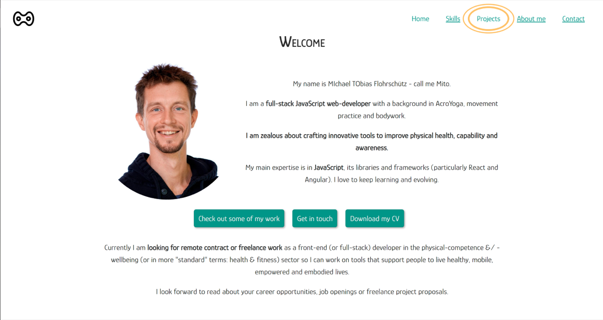
The website you are currently looking at.
Hand-written HTML, CSS and JavaScript without any libraries or build tools, plus a small PHP endpoint for the spam-protected contact form.
Earlier study projects (CareerFoundry full-stack course, 2021)
Built during the Full-Stack Web Development course at CareerFoundry, each with a Kanban board, user stories, user flows and architectural diagrams. Details in the respective GitHub readme.
MoveX Angular client
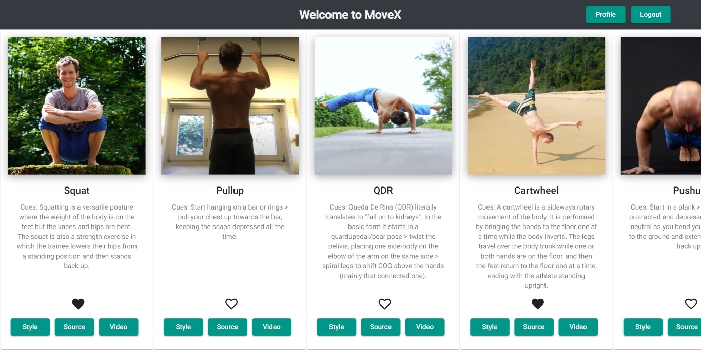
MoveX is a library of movements from various styles and traditions, with descriptions/cues and video sources.
This is the Angular client - A single-page, responsive web application (SPA), using Material design.
MoveX React client
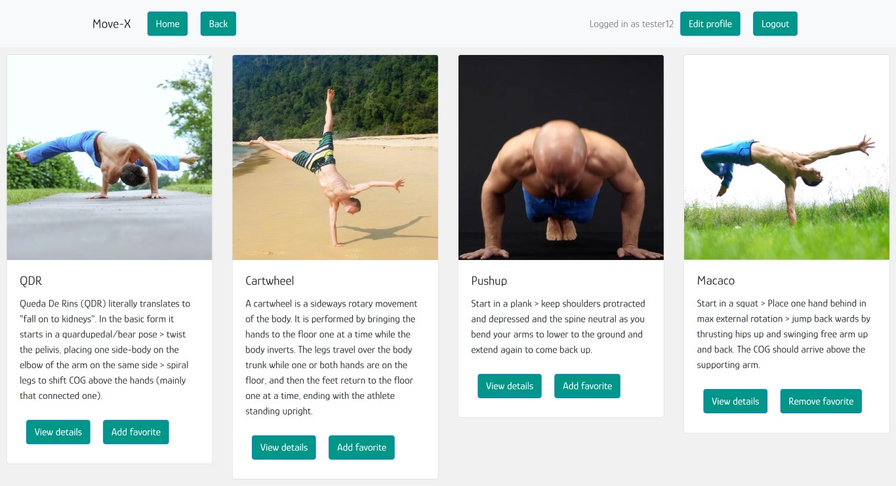
This is the React-based frontend for MoveX - A single-page, responsive web application (SPA), built with React (including a number of additional modules), following the MVC design pattern.
MoveX backend (API)
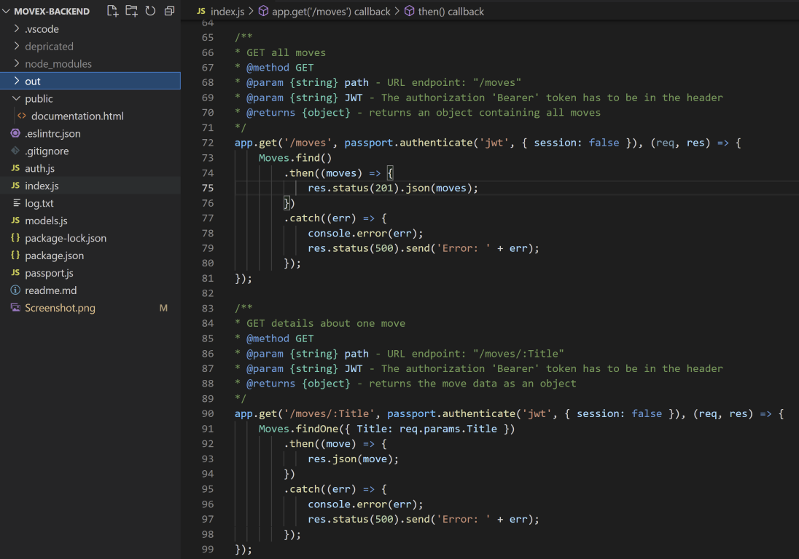
This is the REST API and a non-relational database for MoveX.
The study goals here were to learn about NodeJS (incl. a variety of packages), databases (SQL and NoSQL) and APIs.
Meet app
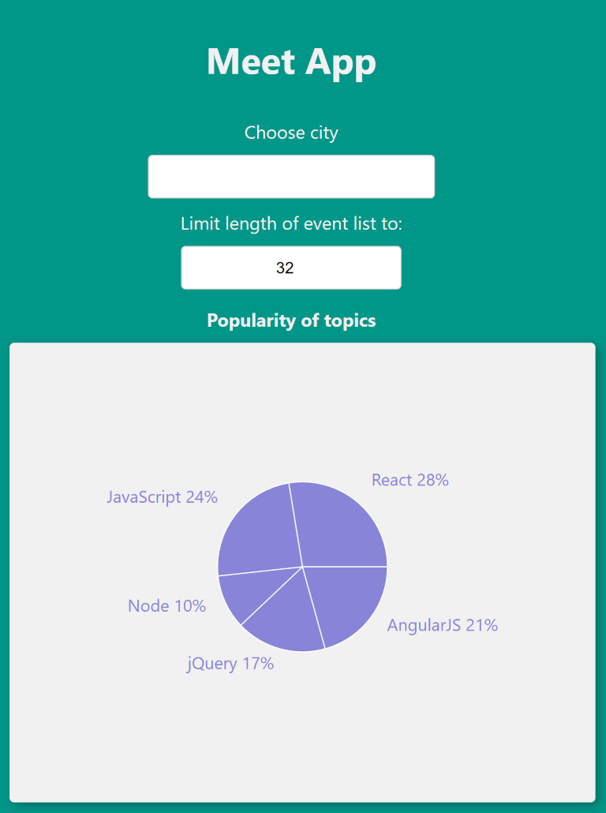
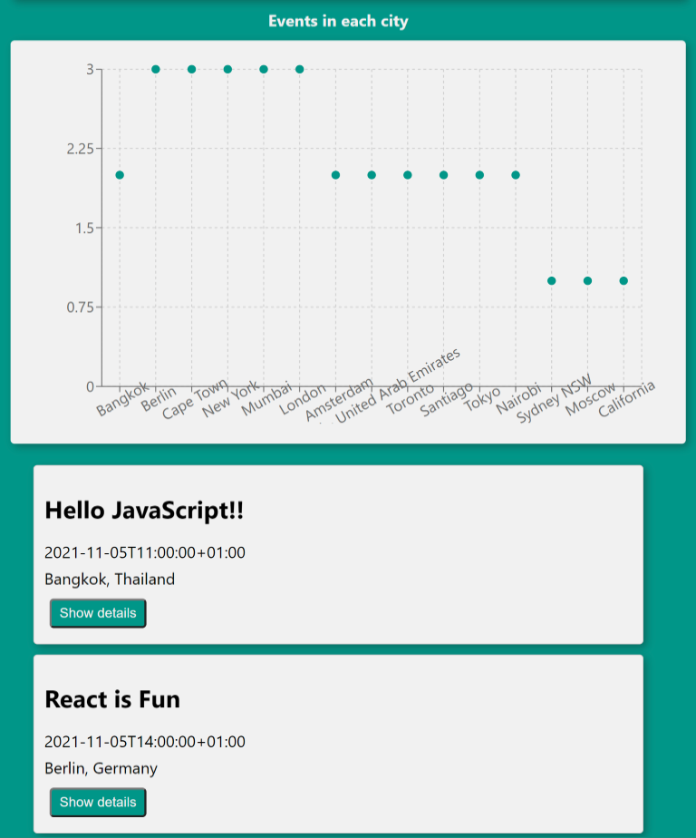
This app displays events in different cities which are fetched from a Google Calendar.
The study goal was to learn about PWAs, test-driven-development (TDD), serverless functions, OAuth (a mechanism to log into an app with your google account), performance monitoring and how to draw pretty charts.
CHATzam
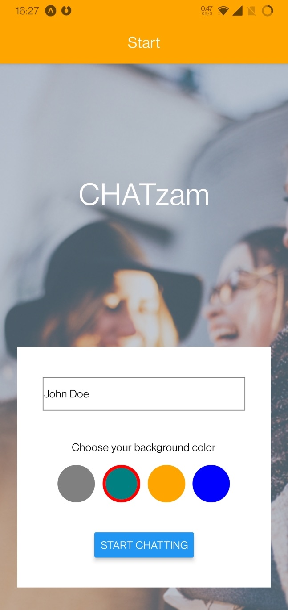
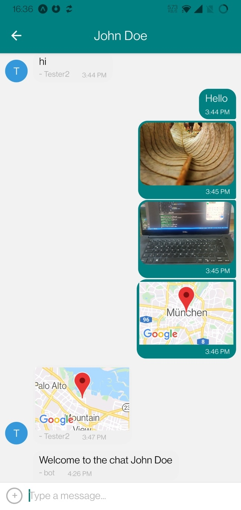
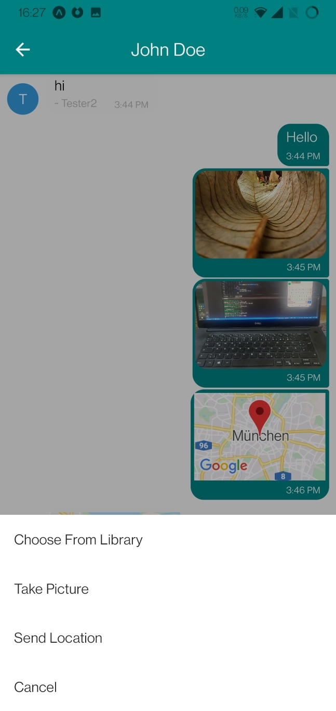
A chat app for mobile devices (Android and iOS) created with React Native.
The study goals here were to learn how to develop and test cross-platform native apps.
Project: Portfolio website
This project started as a static website to learn HTML and CSS. But ... it turned into a full-grown portfolio website.
For practice reasons I chose to refrain from (re)building it using any modules, libraries, frameworks or build tools, so every line of code here is hand-written.
Technologies:
- Semantic HTML (header, footer, forms, tables, ...)
- Custom web components (reusable header and footer)
- CSS (float, flexbox, grid, variables, animations, media queries, ...)
- JavaScript
- Fully responsive
- PHP endpoint for the contact form
To keep my email address away from spam bots, the contact form posts to a small PHP script on the same webspace, protected by a honeypot field, a minimum fill time and a rate limit. The address and phone number themselves are assembled by JavaScript at runtime and never appear in the HTML source.
Project: MoveX Angular Client
MoveX is a library of movements from various styles and traditions, with descriptions/cues and video sources.
For the MoveX study project I created an API including a non-relational database, as well as two different frontend clients (Angular and React). Read the full case study.
This is the Angular client - A single-page, responsive web application (SPA), using Material design.
Features:
- View a list of all moves
- See details for each move, style or source
- User registration and login
- Update profile (username, password, email, birthday)
- Users can add to add remove a move to/from their list of favorites
- Users can delete their account
Technologies:
- TypeScript
- Angular
- Angular-Material
- CSS
- TypeDoc for documentation
- GitHub-pages hosting
Project: MoveX React Client
MoveX is a library of movements from various styles and traditions, with descriptions/cues and video sources.
For the MoveX study project I created an API including a non-relational database, as well as two different frontend clients (Angular and React). Read the full case study.
This is the React-based frontend - A single-page, responsive web application (SPA), built with React (including a number of additional modules), following the MVC design pattern.
Features:
- View a list of all moves
- See details for each move, style or source
- Search moves by name
- User registration and login
- Update profile (username, password, email, birthday)
- Users can add to add remove a move to/from their list of favorites
- Users can delete their account
Compared to the Angular client, the React version additionally has thorough form validation and a search function.
Technologies:
- JavaScript
- React
- React-Bootstrap
- React-Redux
- Axios
- Parcel
- PropTypes
- Netlify hosting
Project: MoveX backend (API)
MoveX is a library of movements from various styles and traditions, with descriptions/cues and video sources.
For the MoveX study project I created an API including a non-relational database, as well as two different frontend clients (Angular and React). Read the full case study.
This is the REST API and a non-relational database.
The study goals here were to learn about NodeJS (incl. a number of packages), databases (SQL and NoSQL) and APIs in general.
Technologies:
- JavaScript
- node.js (Express, Morgan, bodyParser, mongoose, CORS, Passport, bcrypt)
- Non-relational DB on MongoDB Atlas
- Postman (API endpoint testing)
- JSDoc for documentation
- App hosted on Heroku
Meet app
This app displays events in different cities which are fetched from a mock-data Google Calendar.
The study goal was to learn about PWAs, test-driven-development (TDD), serverless functions (FaaS), OAuth (a mechanism to log into an app with your google account), performance monitoring and how to draw pretty charts.
PWA (progressive web application) means it is responsive, available offline, cross-platform and can be added to the home screen.
The FaaS (function as a service) is a third party service (in this case on an Amazon server) that acts as a middleman between the user and the Google Calendar API. This keeps the credentials of the Google Calender secret (not accessible to the user) and makes the authorization process safe and convenient.
Features:
- Show a list of events
- Show/hide event details
- Filter by city name
- Choose number of events to display
- Chart 1: Number of upcoming events per city
- Chart 2: Popularity of topics
Technologies:
- React
- CRA (CreateReactApp)
- CSS
- serverless
- AWS lambda
- OAuth (Google Cloud Console)
- Axios
- Recharts
- Jest (Enzyme, Cucumber, Puppeteer)
- Atatus (performance monitoring)
- GitHub-pages hosting
Project: CHATzam
A chat app for mobile devices (Android and iOS) created with React Native.
The study goals here were to learn how to develop and test cross-platform native apps.
A Google Firestore database was used to store and sync the messages between devices.
Features:
- Enter username
- Choose background color
- Send and receive messages
- Share pictures from the devices gallery
- Take and share photos
- Share location
- See past messages even while offline
Technologies:
- JavaScript
- React Native
- Android Studio
- Expo
- Google Firebase
As this is a mobile app in development stage, there is no live demo available. See GitHub readme for instructions to use/test it.